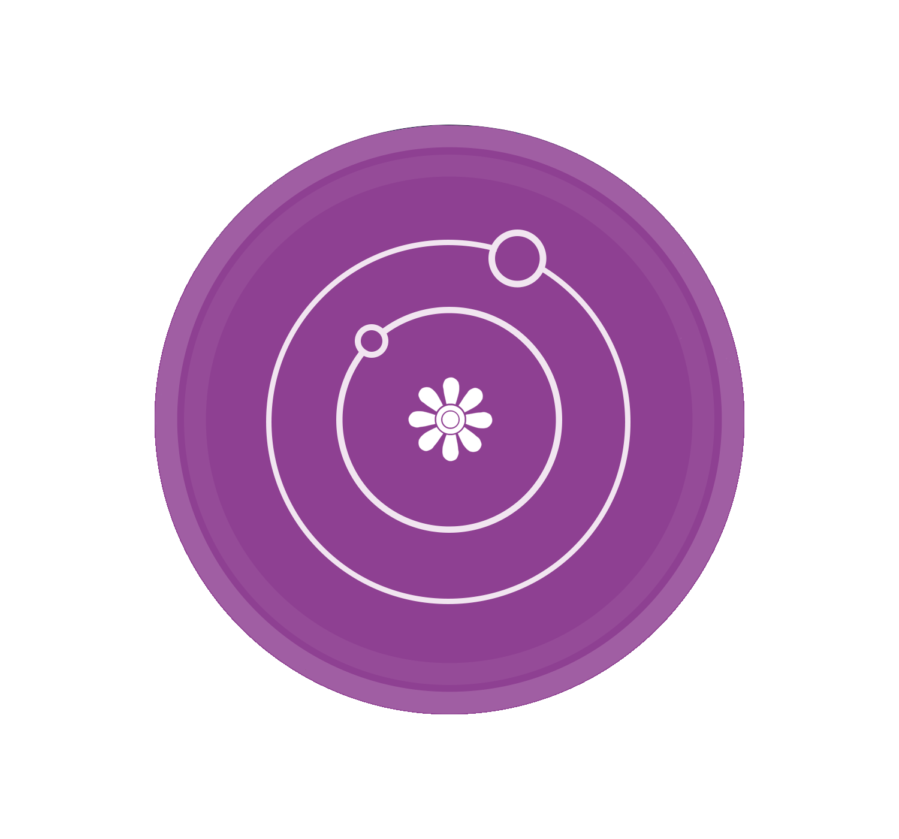

گروه نجوم کاوشمنجم آماتور و رصدگر — کارشناس فیزیک، مدرس نجوم و یکی از بنیانگذاران گروه نجوم کاوش | فعال در دماوند
حمیدرضا حمید کارشناس فیزیک و ستارهشناس آماتور از دهه هشتاد خورشیدی تاکنون مشغول فعالیت در زمینه نجوم ، رصد پیگیر آسمان شب و تدریس ستارهشناسی و نجوم رصدی است. او سابقا یکی از اعضای قدیمی انجمن نجوم آماتوری ایران بوده و به مدت نزدیک به یک دهه در این انجمن فعالیت داشته است. او همچنین در همین دوره پژوهشی را با سایر اعضا انجمن در زمینه نجوم رادیوی و ساخت رادیو تلسکوپهای آماتوری بنیان میگذارد. بعلاوه سابقه دراز دامنهای ازفعالیتهای آموزشی و ترویجی نجوم در گشتهای رصدی خارج از شهر و همچین کارگاههای آموزشی در مدارس و فرهنگسراهای تهران از او بجا مانده.
او بعلاوه در دهه نود خورشیدی با گروههای نجومی نظیر پدیده آسمان دانش همکاری های مستمری را در اجرا برنامههای علمی به انجام رسانده است. در همین دوره او فعالیتها و تجربههای مشترکی در زمینه رصد علمی هلال ماه با سایر رصدگران حرفهای هلال ماه در تهران در سابقه خود ثبت می کند.
در سالهای اخیر او فعالیت علمی و آموزشی خود را در شهر دماوند همچنان ادامه میدهد و برنامههای متعددی را به طور مشترک با رصدخانه دماوند و کانون پرورش فکری کودکان و نوجوانان شهر دماوند برگزار کرده است. او همچنین دوره های آموزشی و کارگاه های علمی متعددی را با همکاری سایر مراکز فرهنگی و آموزشی این شهر برگزار میکند و با کمک ابداع و ساخت ابزارهای علمی- آموزشی برای کودکان نقش پررنگی در ترویج علم در این شهر داشته است.
به ترتیب زمان، از جدیدترین به قدیمیترین